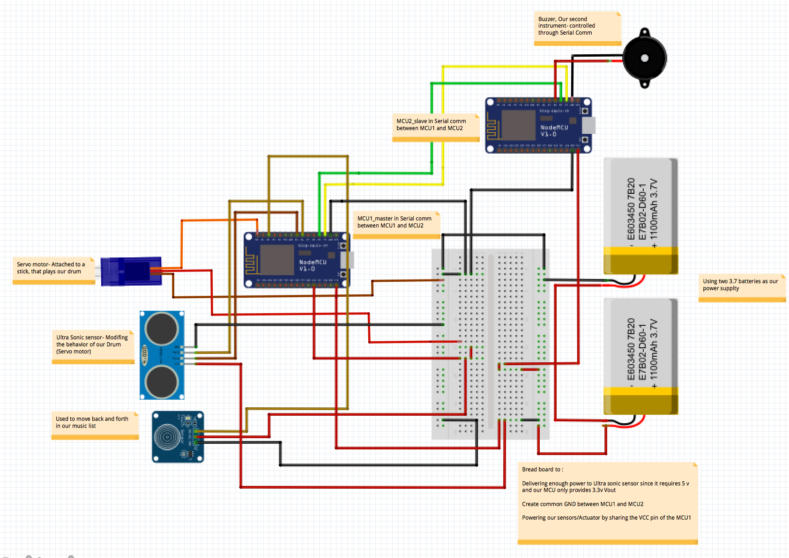
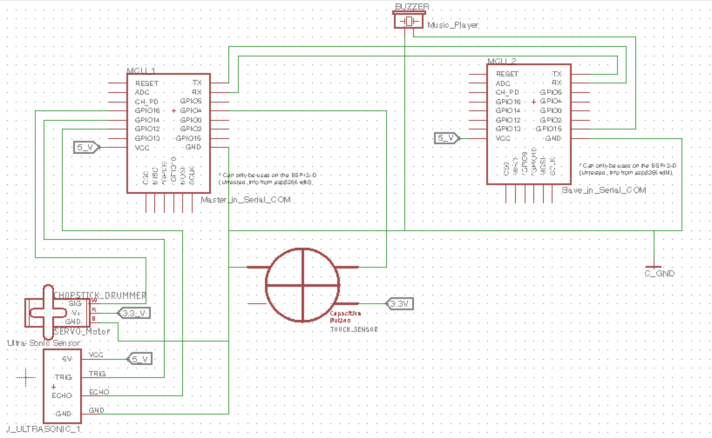

JamBand
Amir, Angel, Lin, Wilson
Created: 2018-02-07 Wed 17:35
Introduction
Our goal was to build a musical "jam band" driven by two ESP8266 microcontrollers, utilizing sensors and actuators. We have an autonomous mode which gives the user an option between two songs, Row Row Your Boat and Twinkle Twinkle. The user can also decide the tempo of the song in the autonomous mode. The Human controlled mode allows a user to change the songs using a touch sensor and vary the speed of the song with an ultrasonic sensor. The user is given instructions on the website on how to modulate the jam band.
What is this?
Watch our video demo:
Wanna create your own? Right on! This is a step-by-step guide to help you recreate our project. All the code can be found in my Github Repo. Follow along!!!
Bill of Materials
BOM 1
| QTY | Part Number | Part Name | Description | Spec Sheet |
|---|---|---|---|---|
| 1 | FS90 | Micro Servo 9g | Small blue, used for tapping | link |
| 1 | Accessory-187 | Jog Type Touch Sensor | Square blue, 3 prong. Senses touch | link |
| 1 | HC - SR04 | Ultrasonic Raning Module | looks like robot eyes | link |
| 2 | 12E | ESP 8266MOD | Microcontroller | link |
BOM 2
| QTY | Part Number | Part Name | Description | Spec Sheet |
|---|---|---|---|---|
| 1 | 571CK | Chop Stick | A wooden Chopstick | link |
| 1 | MCBB400 | Breadboard | For holding components | link |
| 1 | 1956725 | PCB Mini Buzzer | a small black speaker | link |
| 1 | RS002C | Wire Jumper Kit | Wires for Connecting components | link |
BOM 3
| QTY | Part Number | Part Name | Description | Spec Sheet |
|---|---|---|---|---|
| 1 | OOBG | 330 ohm + 5% resistor | a resistor | link |
| 1 | 12E | Motor Shield | Housing for ESP 8266 | link |
| 2 | LP-503562 | 3.7v Battery | Powers the robot | link |
Instruments
There are two instruments in our JamBand, a Chopstick Drumstick and a Buzzer. Each of them are connected to its own micro-controller.
Servo: Chopstick DrumStick
A servo is a rotary actuator that allows for precise control of angular position. In our project, a chopstick is attached to our servo arm to extend its length.
Buzzer
A buzzer is essentially a programmable device that makes noise. This will act as the main rhythm singer in our JamBand.
PIN-OUT
Before we get into the actual wiring, let's take a look of the PIN-OUT of our ESP8266 & Motor Shield that will be useful for wiring later on.
PINOUT: ESP8266
PINOUT: Motor Shield
NOTE: Motor Shield is basically a board that makes wiring our ESP8266 easier. This is optional.
Schematic
The schematics of our circuits are shown below, follow the exact connection!
Mechanical Drawing

Circuit Schematic

Arduino Setup
Before we get into some coding, let's make sure your have Arduino setup. Here is a quick setup guide from Instructables.
Moreover, we will need to install drivers for our ESP to connect with our computer. Drivers for different OSs can be found here.
Time to Code
In the following, we will guide your through some very basic code to make our servo, buzzer, ultrasonic, touch sensors to work. We can then build up from our basic code. All the code can be found in this Github folder.
TestCode: Servo
#include <Servo.h> Servo servo1; void setup() { servo1.attach(16); void loop() { servo1.write(90); delay(500); servo1.write(0); delay(500); } }
In void setup, we attach the global Servo object servo1 to whatever signal pin (orange) your servo is connected to (Brown=GND; Red=VCC; Orange=Signal). In loop, we basically set the angle for the servo to got to and a delay right after to give it time to reach such orientation.
TestCode: Buzzer
const int buzzerPin = 15 ; //Buzzer Input int duration = 280; //long duration for the buzzer note int frequency(char note) { // Input a note character (a-g), and returns the corresponding frequency in Hz for the tone() function. char names[] = { 'c', 'd', 'e', 'f', 'g', 'a', 'b', 'C' }; // key int frequencies[] = {262, 294, 330, 349, 392, 440, 494, 523}; // value pari // Search and find the corresponding frequency for (i = 0; i < numNotes; i++) { // Step through the notes if (names[i] == note) { return(frequencies[i]); } } return(0); } void setup() { pinMode(speakerPin, OUTPUT); Serial.begin(115200); } void loop() { tone(buzzerPin, frequency('c'), duration); // Play note c (262 Hz) for 280ms. delay(1000); }
The above code should be self-explanatory.
TestCode: Ultrasonic Sensor
const int trigPin = D5; const int echoPin = D6; long duration; int distance; void setup() { pinMode(trigPin, OUTPUT); // Sets the trigPin as an Output pinMode(echoPin, INPUT); // Sets the echoPin as an Input Serial.begin(115200); // Starts the serial communication } void loop() { // Clears the trigPin digitalWrite(trigPin, LOW); delayMicroseconds(2); // Sets the trigPin on HIGH state for 10 micro seconds digitalWrite(trigPin, HIGH); delayMicroseconds(10); digitalWrite(trigPin, LOW); // Reads the echoPin, returns the sound wave travel time in microseconds duration = pulseIn(echoPin, HIGH); // Calculating the distance distance= duration*0.034/2; // Prints the distance on the Serial Monitor Serial.print("Distance: "); Serial.println(distance); delay(1000); }
The above code should be pretty self-explanatory.
TestCode: Touch Sensor
int touchPin = D2; void setup() { Serial.begin(115200); pinMode(touchPin, INPUT); } void loop() { int touchValue = digitalRead(touchPin); if (touchValue == HIGH) { Serial.println("TOUCHED"); } else { Serial.print("."); } delay(1000); }
The above code should be pretty self-explanatory.
Composing your music with Servo and Buzzer
Part 1
Part 2
Part 3
Communication between two micro-controllers
Now that we get everything set up, we need a way for the two MCUs to talk to each other. For the same of simplicity, we are using Serial Communication.
Wire connection
First, connects Tx to Rx from one MCUs and and vice versa for the other. Then, a simple code can be used to test if the channel is working. Note that here we are treating the Drumsticks side as a master (sender) and the Buzzer side as a slave (receiver).
Serial Communication: Sender side
void setup() { Serial.begin(115200); } void loop() { Serial.print('H'); // Command the slave to turn the LED ON delay(2000); Serial.print('L'); // Command the slave to turn the LED OFF delay(2000); }
Serial Communication: Receiver side
int incomingByte; // a variable to read incoming serial data into void setup() { Serial.begin(115200); pinMode(LED_BUILTIN, OUTPUT); // built-in LED pin for ESP8266 } void loop() { // see if there's incoming serial data: if (Serial.available() > 0) { // read the oldest byte in the serial buffer: incomingByte = Serial.read(); // if it's a capital H (ASCII 72), turn on the LED: if (incomingByte == 'H') { digitalWrite(LED_BUILTIN, HIGH); } // if it's an L (ASCII 76) turn off the LED: if (incomingByte == 'L') { digitalWrite(LED_BUILTIN, LOW); } } }
Update this code to your two MCUs, you should see the 'L' and 'H' in the Serial Monitor on the sender side while the LED on the receiver side should toggle ON and OFF in a interval of 2 seconds.
Wireless connection
Time to connect your controller to the web so that users can control your band through WIFI.
For Access-Point WIFI setup, please reference to this online tutorial.
Employ your device to the World-Wide Web
Please complete the tutorials linked in the previous slide before attempting this setup. In the online tutorial, you successful create a WIFI access point at your ESP8266 device; however, users have to connect to the WIFI you created in order to control the band. Quite inconvenient right? Indeed, we can actually do a simple port forward using our home WIFI to get our project online.
ESP as a workstation: setup
#include <ESP8266WiFi.h> const char* ssid = "your_home_wifi_ssid"; const char* password = "your_home_wifi_password"; const char* host = "192.168.0.24"; //it will tell you the IP once it starts up WiFiServer server(80); //Initialize the server on Port 80 void setup() { WiFi.mode(WIFI_STA); //Our ESP8266-12E is a Work STAtion connected to your Home Wifi Serial.begin(115200); //Start communication between the ESP8266-12E and the monitor window Serial.print("Connecting to "); Serial.println(ssid); WiFi.begin(ssid, password); while (WiFi.status() != WL_CONNECTED) { delay(500); Serial.print("."); } Serial.println("WiFi connected"); server.begin(); // Start the server // Print the IP address Serial.println(WiFi.localIP()); pinMode(LED_BUILTIN, OUTPUT); //GPIO16 is an OUTPUT pin; digitalWrite(LED_BUILTIN, LOW); //Initial state is ON }
ESP as a workstation: loop
The code in loop() should be exactly the same as in the tutorial.
Essentially what we did here is connect our ESP to our home WIFI which is CONNECTED to the Internet; instead of treating ESP as a WIFI access point. Connecting to our home WIFI is a crucial step in getting our project online.
Port Forwarding
If everything works well, you should now be able to connect to the control page at 192.168.4.1 given you are connected to your home WIFI. To get it online, we need to do a port forwarding in our router setting.
- Go to 192.168.0.1 (or whatever your router setting page is)
- Find port forwarding, look for two options to fill in: IP address and port
- Go to http://www.whatsmyip.org to find IP address for your router
- In the router port forwarding page, fill the IP address you found and the port you set in your Arduino code (80 in our case).
Try it out!
If everything sets up correctly, go to the IP address of your router from anywhere whether you are using WIFI or cellular data. You should be able to see that control page of our jamband. You can make your own webpage with cool styles such as this one here.